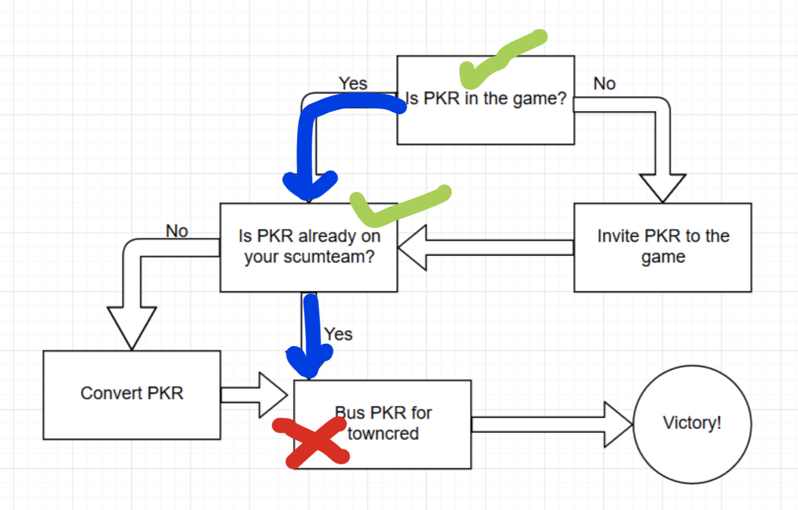

Enforcer frenzy bypasses almost everything though; relevantly to my intuitions it also bypasses healing, which the Heroine ability doesn’t
fair.
agree to disagree on mechanics. Either way i’ve accepted my fate as a mechanical ticking time bomb.
My personal favorite fact about how Frenzy works is the exact mechanics of what it does with regards to occupation
people will say it makes you occupy immune, but actually it makes you ignore occupation
so you get occupied
you just attack them anyway
butler: gets assasin drunk on wine
assasin: stabs butler anyways
Anyone who gets tracked to an unprotected target on a night with a kill not from a town killer is confirmed not the convert
anyone who is flirted S/I or S/S is confirmed not the convert
anyone who shows up as the same faction as another player isn’t the convert (Visionary has invest immunity, they wouldn’t match a Visionary)
anyone who gets Wisped as not attacking is not the convert
anyone who gets peeked Unseen is not the convert
anyone who has some sort of mechanically confirmable ability who uses said ability is not the convert
1 Like
Visionary is investigative ability immune but the point about mechanically confirmable abilities stands
-
VulgardShurian - SirDerpsAlot
- WazzaAzza
- JakeTheWolfie
- Possessed
- Sam
- Frostwolf103
- katze
- Isaac_Gonzalez
- Solic
- KyoDaz
these are the nerds who haven’t mech confirmed themselves.
please do that nerds
I noticed this ability and was nervous but I think technically under rules as written it can never be used

uh alrighty then?
1 Like
Invest results from last night are more-or-less useless
The convert was Unseen last night and the Visionary is immune
I’ll be able to be on soon I got college but its a shorter day :]

i found where the scumteam failed
2 Likes
A lot of stuff was copied from return of the bd and it’s clear I have yet to solve all the bugs at this point. That ability was not intended to be unusable, so now officially, that restriction is removed.
1 Like
If there are more than 2 BD alive and the visionary uses that ability on a player who is not the heroine, the heroine will either revert to their convert class (if not the original heroine) or become a non-unique, non-prestige BD convert class of their choice (if the original heroine).
Killing Squid (despite the risk of Stalker/Nightwatch/Enforcer) rather than converting her probably points to something
My guess is that it points to going for an SPC but I’m open to other theories
scumteam no idea what they are doing?
With Eevee flipping non-Insurgent, if you’re Unseen King, you should probably out your PS target
Scum probably converted last night which means that you outing that target doesn’t really help them, and it does help us by giving us a free locktown
beacuse i openly said i’m gaurding squid.
and they should have checked if attacking squid… kills them.
so i don’t see a strong night action planner paired with PKR here
1 Like
I think that takes literally only solic off of that list but hey it’s a start
1 Like